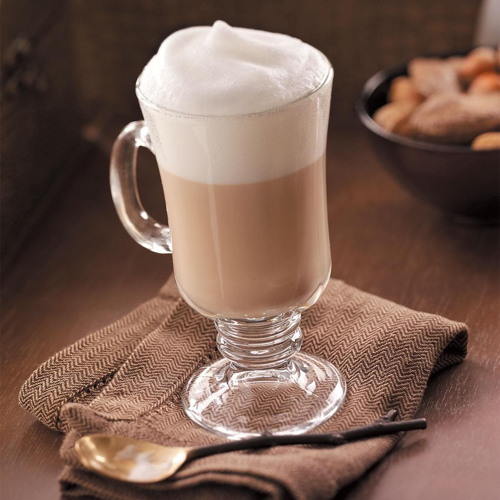

Cappuccino Recipe

Description
A classic cappuccino is a timeless coffee drink made with equal parts espresso, steamed milk, and silky milk foam. Its rich espresso flavor is perfectly balanced by the creamy texture of the milk, creating a smooth and satisfying beverage. Whether enjoyed in the morning or as an afternoon pick-me-up, a well-made cappuccino delivers a comforting café experience with every sip.
Ingredients
- 1 shot (30 ml / 1 oz) freshly brewed espresso
- 120 ml (½ cup) whole milk
- Optional: Sugar, to taste
- Optional: Cocoa powder or cinnamon for garnish
Steps
- Brew a fresh shot of espresso and pour it into a preheated coffee cup.
- Steam the milk until it reaches about 60–65°C (140–150°F), creating a smooth microfoam.
- Gently swirl the steamed milk to combine the milk and foam.
- Pour the steamed milk into the espresso, finishing with a thick layer of foam on top.
- Sprinkle cocoa powder or cinnamon over the foam if desired.
- Serve immediately while hot.
HOME